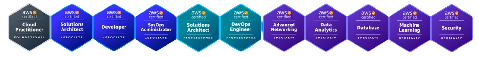

Amazon Web Services (AWS) is a comprehensive, evolving cloud computing platform provided by Amazon.com. It offers a wide range of cloud services, including computing power, storage options, networking, databases, and more. Obtaining a certification in AWS validates expertise in cloud computing and opens doors to various career opportunities in the tech industry.
EDUREKA provides industry-relevant certifications and training programs, including courses focused on AWS. An EDUREKA certificate in AWS demonstrates proficiency in utilizing AWS services effectively, managing cloud-based infrastructure, and implementing best practices in cloud computing. With the combination of AWS skills and an EDUREKA certificate, individuals can showcase their competence in cloud technologies and enhance their professional credentials.
As part of our commitment to empowering learners, we offer complimentary access to high-quality courses on Udemy, a leading online learning platform. These carefully curated resources are designed to thoroughly prepare individuals for their upcoming exams. Leveraging the expertise of top instructors and comprehensive study materials, our free Udemy courses ensure that candidates are well-equipped with the knowledge and skills necessary to excel in their examinations.
 .